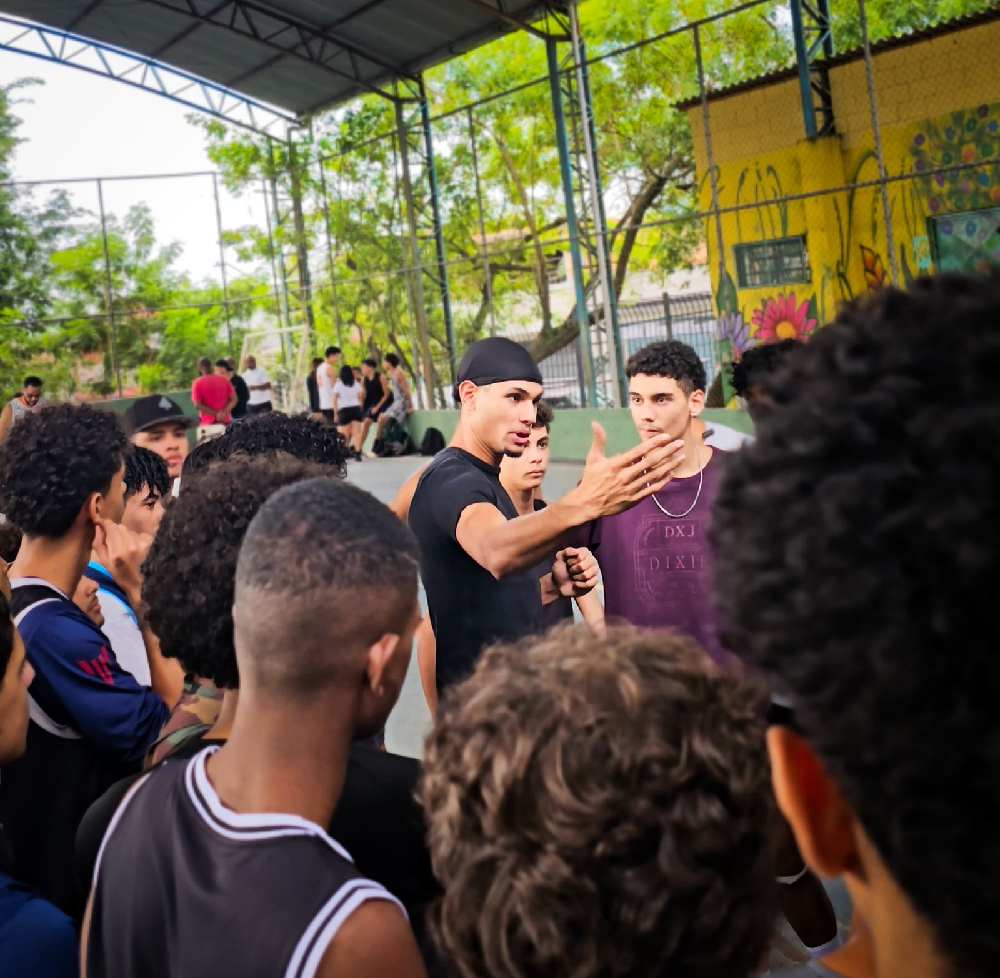
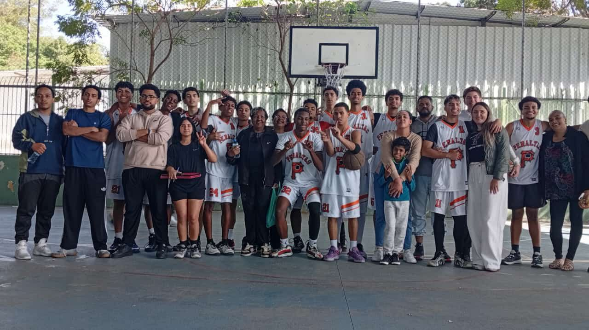
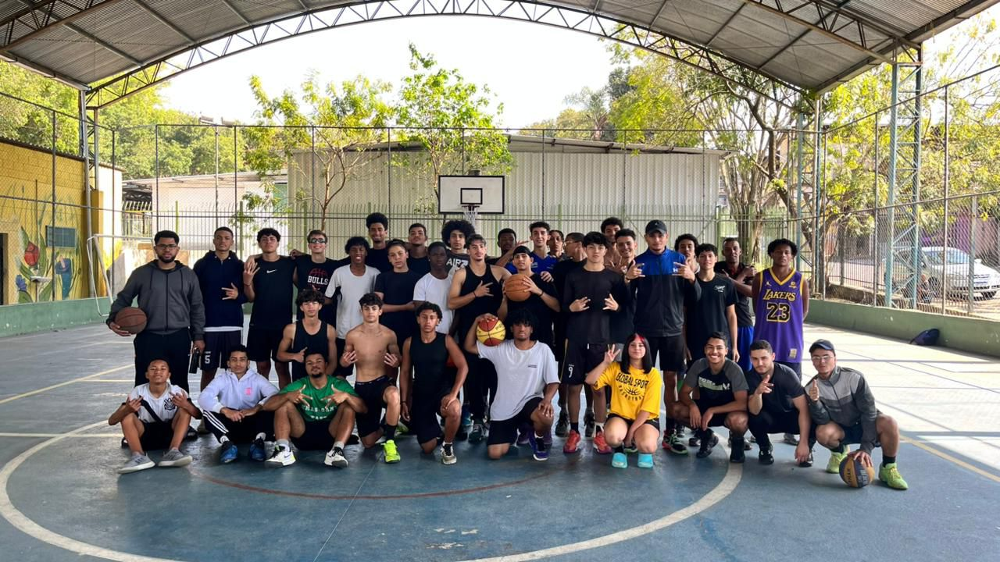
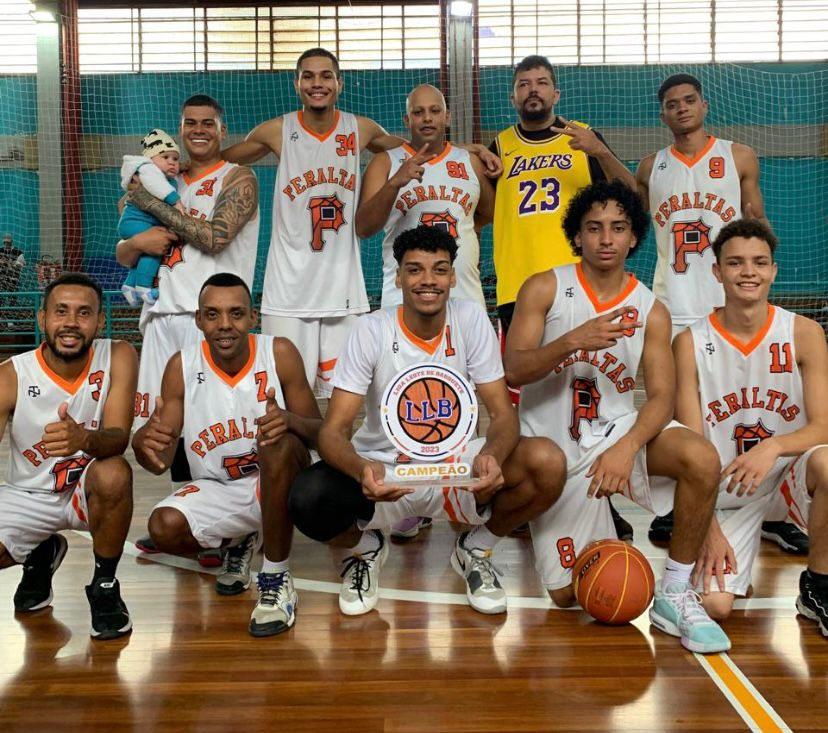

Impacto social construído no território
Os resultados do Instituto Peraltas são fruto de presença constante, vínculo comunitário e atuação direta com jovens da periferia.
Números do projeto

150
jovens atendidos ativamente

600+
familiares, responsáveis, comunidade local e escolas impactadas indiretamente

9
treinos semanais regulares

Zona Leste
atuação territorial com base no Itaim Paulista
Resultados observados
- Manutenção da frequência dos jovens nos treinos
- Participação regular em campeonatos e eventos esportivos
- Fortalecimento de vínculos comunitários
- Redução da ociosidade juvenil no território
- Desenvolvimento de disciplina, convivência e autoestima
Como acompanhamos o impacto
O Instituto Peraltas acompanha seus resultados por meio de controle de presença, participação em atividades, registros internos e observação contínua da permanência dos atletas no projeto.
A estruturação de relatórios formais de impacto está em desenvolvimento, visando ampliar a transparência e o diálogo com parceiros e poder público.
Quer ampliar esse impacto?
Parcerias fortalecem o alcance do projeto e permitem que mais jovens tenham acesso ao esporte e a oportunidades.
Conheça as parcerias